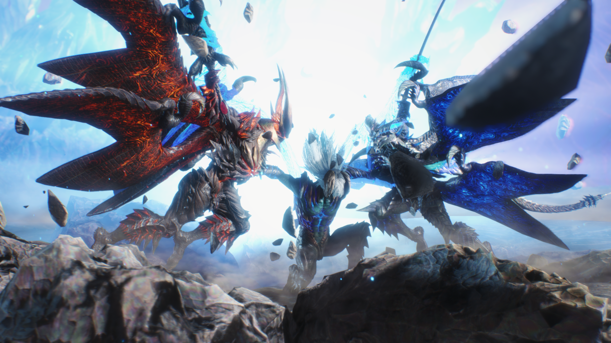

O jogo acontece cinco anos depois de Devil May Cry 4 e segue um trio de personagens com poderes demoníacos: Dante, Nero e um novo protagonista chamado V.
Eles tentam impedir que o Rei Demoníaco Urizen, destrua o mundo humano.
Ao longo do jogo, o jogador pode usar qualquer um desses três personagens em missões diferentes, com cada personagem tendo sua própria maneira de lutar e de evolução de força.
Quando isso acontece, o mistério por trás de V é revelado ao lado de sua conexão com Urizen.
